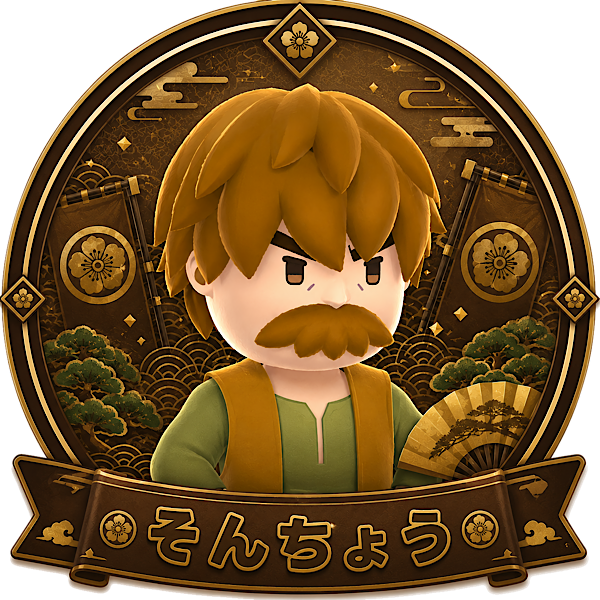

「存在感で場を和ませるロマン」タイプ
あなたは、性能だけでなくキャラの雰囲気や存在感も大事にするタイプ。
効率を突き詰めるだけではなく、「このキャラで遊びたい」という気持ちを大切にできます。
周りと少し違う選択をしても、それを楽しめる余裕がある人です。
キャラの見た目や名前の響きも含めて、ゲームを味わえるタイプです。
そんちょうは、貫禄のある見た目と独特の存在感が魅力のキャラです。
スキルの効果は分かりにくい部分がありますが、その分「好きだから使う」という楽しみ方がしやすいキャラでもあります。
性能だけでなく、キャラ愛や雰囲気を大事にしたいあなたと相性が良いです。
場にちょっとした味を出してくれる、ロマンのある選択です。